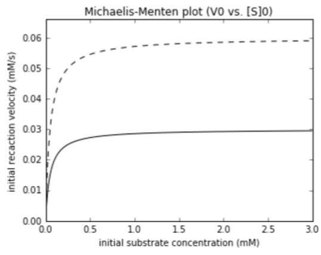

You measure MM curves for a variety of enzymes (solid curves). You add molecule $A$ to each solution and remeasure its MM curve (dashed line). For each curve: What changed ($K_{M}$ or $V_{max}$)? Is this a competitive or noncompetitive inhibitor?
$K_{M}$, competitive
$V_{max}$, noncompetitive

$V_{max}$, activator
Competitive inhibitor
Inhibitor competes with substrate for same site
This raises $K_{M}$: lower apparent affinity for substrate because it has to compete
No effect on $V_{max}$. If you add enough substrate, you swamp out competitor
Inhibitor is chemically similar to the substrate
Example: Ethanol competes with methanol for alcohol dehydrogenase, lowering the rate of formaldehyde production.
Noncompetitive inhibitor
Binds distant from the active site, altering active site to turn off activity
This leads to a drop in $V_{max}$. (lower $[E]_{T}$: Less of the enzyme is in the active form.)
No effect on $K_{M}$. What active enzyme is around has exact same affinity for substrate
The inhibitor need not have any chemical similarity to the substrate
Example noncompetitive inhibitor
Conceptual goals
Understand that binding at one site in a protein can alter activity at another site
This "allostery" arises because the "allosteric effector" interacts with one conformation, but not the other.
Understand how this applies to hemoglobin (BPG).
Skill goals
Determine how binding at on site affects activity at the other
Predict the effects of adding allosteric effectors to a system of equilibria.
Hemoglobin transports $O_{2}$ from the lungs to tissues
{kind=link}